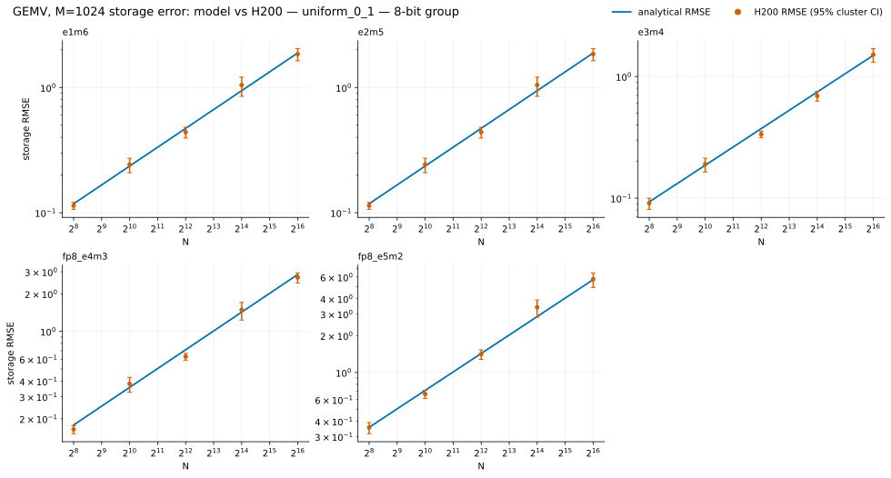
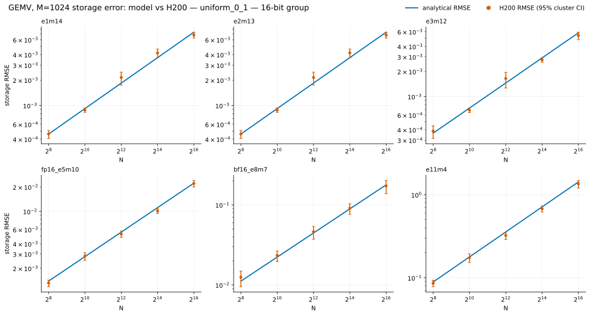
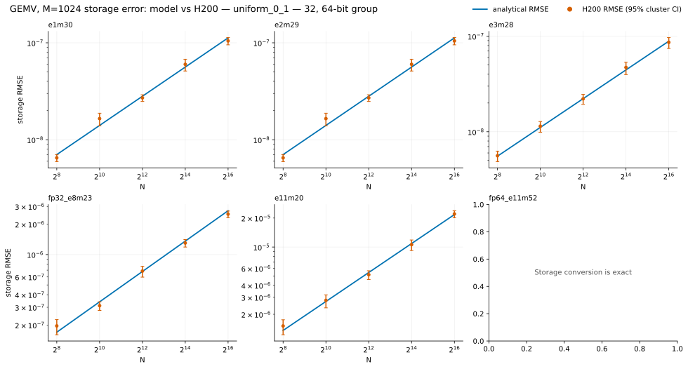
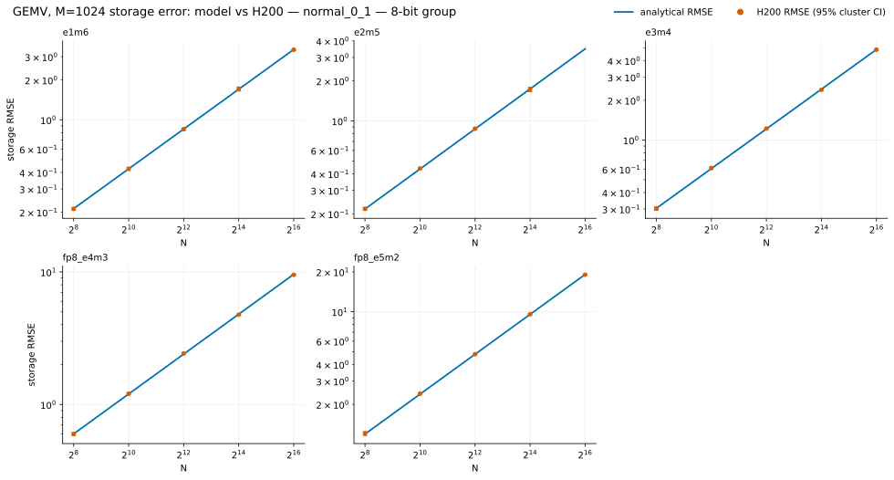
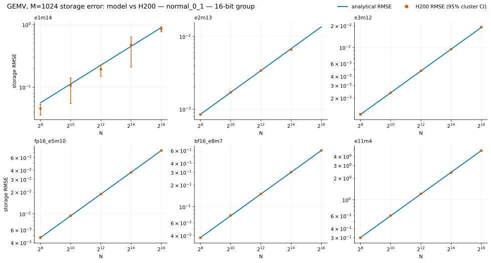
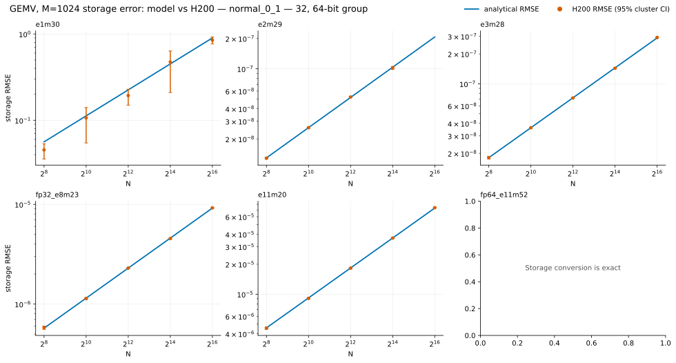

GEMV accuracy
Per-row storage RMSE at fixed M=1024, separated by distribution and storage width.
U(0,1) GEMV
The same analytical row-error model is compared with 16 independently generated matrices and vectors.
8-bit

16-bit

32/64-bit

N(0,1) GEMV
Shared vectors reduce the number of independent rare-overflow events, so confidence is wider than for DOT.
8-bit

16-bit

32/64-bit
